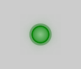

StatusIndicator QML Type
An indicator that displays active or inactive states. More...
| Import Statement: | import QtQuick.Extras 1.4 |
| Since: | Qt 5.5 |
Properties
Detailed Description
A StatusIndicator in the active state.
A StatusIndicator in the inactive state.
The StatusIndicator displays active or inactive states. By using different colors via the color property, StatusIndicator can provide extra context to these states. For example:
| QML | Result |
import QtQuick 2.2 import QtQuick.Extras 1.4 Rectangle { width: 100 height: 100 color: "#cccccc" StatusIndicator { anchors.centerIn: parent color: "green" } } |  |
You can create a custom appearance for a StatusIndicator by assigning a StatusIndicatorStyle.
Property Documentation
active : bool |
This property specifies whether the indicator is active or inactive.
The default value is false (inactive).
color : color |
This property specifies the color of the indicator when it is active.
The default value is "red".